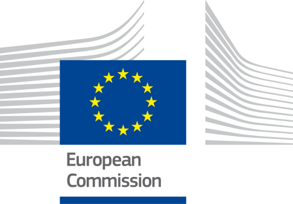
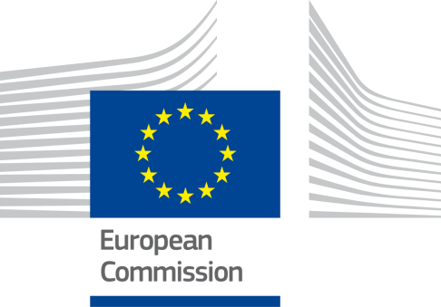
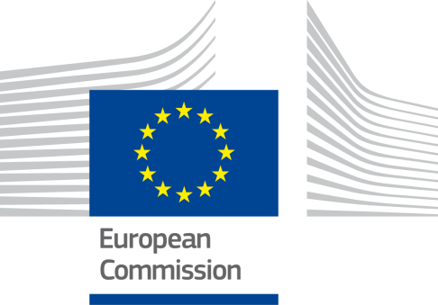

ISA2
Digital Government Factsheet 2019
France
ISA2
Digital Government Highlights 6
Digital Government Political Communications 7
Digital Government Legislation 13
Digital Government Governance 20
Digital Government Infrastructure 26
Digital Government Services for Citizens 32
Digital Government Services for Businesses 40
Population: 66 926 166 inhabitants (2018)
GDP at market prices: 2 348 991 million Euro (2017)
GDP per inhabitant in PPS (Purchasing Power Standard EU 28=100): 104 (2017)
GDP growth rate: 1.5%
Inflation rate: 2.1%
Unemployment rate: 9.1%
General government gross debt (Percentage of GDP): 98.5 (2017)
General government deficit/surplus (Percentage of GDP): -2.7 (2017)
Area: 643 801 km2
Capital city: Paris
Official EU language: French
Currency: EUR
Source: Eurostat (last update: 15 March 2019)
The following graphs present data for the latest eGovernment Indicators for France compared to the EU average. Statistical indicators in this section reflect those of Eurostat at the time the Edition is being prepared.
Percentage of individuals using the internet for interacting with public authorities in France | Percentage of individuals using the internet for obtaining information from public authorities in France | ||
Percentage of individuals using the internet for downloading official forms from public authorities in France | Percentage of individuals using the internet for sending filled forms to public authorities in France | ||
The graph below is the result of the latest eGovernment Benchmark report, which monitors the development of eGovernment in Europe, based on specific indicators. These indicators are clustered within four main top-level benchmarks:
These top-level benchmarks are measured using a life-events (e.g. mystery shopping) approach. Eight life events are included in the overall eGovernment performance score. Four of these life events were measured in 2013, 2015 and 2017 and the other four were measured in 2012, 2014, 2016, and again in 2018. The life events measured in 2017 were Regular business operations, Moving, Owning and driving a car and Starting a small claims procedure. The life events measured in 2018 are Business start-up, Losing and finding a job, Family life and Studying.

Source: eGovernment Benchmark Report 2018 Country Factsheets
Digital Government Political Communications
Digital Government Legislation
Digital Government Infrastructure
Since 23 January 2018, for all online processes on impots.gouv.fr, users benefit from a new way of connecting with FranceConnect using the digital identity of their choice. Regarding cybersecurity, Cybermalveillance.gouv.fr and its members produced the first part of the Kit de sensibilisation.
Digital Government Services for Citizens and Businesses
Since mid-October 2018, the Directorate General of Public Finance (DGFiP) provided public authorities and their users with an enhanced, secure and modern online payment service, PayFiP.
National strategy for an inclusive digital society
In September 2018, the National Plan for Inclusive Digital and launch of Digital in Common(s) was launched, the first event bringing together all the actors of digital mediation. The objective was to train 1.5 million people in digital literacy in order to reduce inequalities and provide equal opportunities for all throughout the country. With 13 million French people who still do not use the Internet, or only to a limited extent, including 6.7 million who never connect to the Internet, this is a real challenge for the Government which is committed to carrying out the digital transformation of the State. This national strategy is based on four main approaches:
Publication of departmental transformation plans
Following the roadmap that the Prime Minister sent to each member of the executive at the beginning of his term of office, each minister has now drawn up a transformation plan, for which he/she is responsible, in order to ensure the implementation of the main reforms. After the time of design and trade-offs, the 2nd ISCO marked the time to accelerate the implementation of the ministries' roadmaps and their transformation plans. These plans are monitored at the highest level to ensure that the reforms undertaken are translated into concrete results. The ambition is to have a closer, simpler and more efficient state to better meet citizens' expectations.
Departmental digital transformation plans
As part of the Public Action 2022 initiative launched by the Prime Minister in October 2017, the Minister of the Armed Forces defined a roadmap at the end of 2017 setting three objectives for the digital transformation of her ministry:
This strategic plan, the first of all the ministries to be presented, sets out the actions in a concrete way, as the Minister of the Armed Forces reminded us: “After four months of work, we are now entering the time of action. This plan offers concrete measures to fully achieve our objectives and address the digital transformation”.
On the other hand, the education system is engaged in profound pedagogical and organisational transformations, from nursery school to post-baccalaureate, which require a strong mobilisation of the potential of digital technology. It represents a powerful lever for transformation to support ministerial policy in all its dimensions: pedagogical transformation, with digital technology at the service of learning and its evaluation, training in the challenges and professions of tomorrow, simplification of relations with users, modernisation of the functioning of the State with redesigned information systems.
Today, the National Education Department produces a very large amount of data related to school life, student assessments and results, and the work and homework they do. A wide variety of personal digital data is collected, stored and processed by a multitude of actors (schools and educational establishments, academic services, local authorities, private partners providing educational resources and digital services).
The Ministry of National Education must ensure that the flow, processing and storage of this school data strictly respects the privacy of students and their families, teachers and administrative staff.
ICT in education for the project for a school of trust (Ecole de la Confiance)
The education system is engaged in profound pedagogical and organisational transformations, from nursery school to post-baccalaureate, which require a strong mobilisation of the potential of digital technology. It represents a powerful lever for transformation to support ministerial policy in all its dimensions: pedagogical transformation, with digital technology at the service of learning and its evaluation, training in the challenges and professions of tomorrow, simplification of relations with users, modernization of the functioning of the State with redesigned information systems.
Public Action
The modernisation of the State was reflected in the 2022 public action programme launched in September 2017 by the Prime Minister, Édouard Philippe. It has three objectives: improving the quality of the service provided to the user, improving the working conditions of staff and helping to control the budget path. To achieve these objectives, the Government developed a national strategy for the transformation of public action, published at the second Inter-ministerial Committee on Public Transformation in October 2018. The transformation plans included precise and quantifiable indicators to measure and report on the success of the programme. French citizens will thus be able to monitor the progress of the reforms. The ambition is to have a closer, simpler and more efficient State to better meet citizens' expectations, with transparency in monitoring being a guarantee of the success of reforms.
The national strategy is based on four axes that guide the Government's action:
This strategy is implemented in each ministry in ministerial transformation plans that define the modalities for implementing major government reforms (milestones, achievement and impact indicators). The monitoring of the implementation of these reforms is carried out by the Interministerial Directorate for Public Transformation with the offices of the Prime Minister and the President of the Republic and takes the form of high-level follow-up meetings scheduled at regular intervals.
Concerned Development of the Territorial Digital Administration (DCANT)
The Minister of State for the Digital Sector launched the Concerted Development of the Territorial Digital Transformation (DCANT) programme.
This programme aims to become the roadmap for regional digital transformation. It is co-authored by associations of elected representatives and representatives of State services. Its ambition is to build complementary and efficient digital public services.
There are four priorities:
These actions are to be updated and enriched every six months.
Government Roadmap for the Digital Economy
Following a workshop on the digital economy organised on 28 February 2013, the government presented its Roadmap for the Digital Economy. This strategy revolved around three pillars which are to 'Provide opportunities for youth', 'Reinforce competitiveness', and 'Promote our values in society'.
Provide opportunities for Youth
Four objectives were defined under this pillar:
Reinforce competitiveness
Four objectives have been defined under this pillar:
Promote our values in society
Six objectives have been defined under this pillar:
Launching of digital public service "state start-up" strategy
Produced in an unprecedented construction approach by a small independent team hosted by the Inter-Ministerial Directorate for Digital Affairs and State Information and Communication System (DINSIC) and supported by a community of public officials and citizens. It acts as a digital public services incubator.
Within this incubator, France is currently developing a new striking strategy of public services delivery. This strategy is in line with the Etat Plateforme framework, which aims to facilitate the delivery of new digital public services based on the sharing of information between public administrations while being under the full control of users.
Inter-ministerial network of the State (RIE)
RIE is a key project in the modernisation of the State’s information system of public action in France. It aims to pool the existing networks – and replace them – with a new unified infrastructure in order to connect all governmental sites, central and decentralised administrations in France with a target of 17 000 connected sites by 2017. The key aims of RIE are the following:
Facilitate the exchange of information and data between administrations to simplify procedures
Following the law of 10 August 2018 for a State in the Service of a Company of Trust, a decree published in the Official Journal of 20 January 2019 supplements the principle of "Tell us once" where a user of the administration (individual or company) carrying out an action will no longer be obliged to provide certain information or supporting documents (e.g. reference tax income, proof of identity) as soon as these elements are already held by the administration's services.
Cloud strategy
On 3 July 2018, the French Government announced its cloud strategy. To support the digital transformation of the State, the Government adopted a strategy for the use of cloud computing by the administration. The objective of the strategy was to develop the use of the cloud by administrations, public institutions and local authorities within 3 years.
This allowed each administration to choose the solution that best suits its needs.
To promote a level playing field between cloud offers and traditional IT, regulatory adaptations will be made, particularly for asset code, in order to be able to use secure cloud offers with hosting outside the national territory.
Implementation of secure digital identity solutions: launch of a program
The deployment of the digital identification system, a new public service, enables everyone, whether citizens, residents or legal entities, to prove their identity in a secure, ergonomic and accessible way, both during data exchanges related to administrative procedures and for more extensive uses such as commercial transactions on the Internet.
Information campaign to carry out administrative procedures in complete safety
The objective of this national campaign is to give the French the ability to carry out administrative procedures in complete safety. Fake administrative sites offer to carry out certain common administrative procedures for a fee (e.g. request for birth certificate, criminal record, change of address, registration on the electoral rolls), while they are offered free of charge on the official websites of the administration accessible from the website www.service-public.fr.
For those who are cheated citizens, this is not only a financial problem but an intrusion into their private lives, because the use of these sites leads to access to sensitive personal data.
No political communication was adopted in this field to date.
European Single Procurement Document (ESPD)
In 2018, the European Single Procurement document (DUME) service was launched in France. The ESPD is a harmonised declaration of honour drawn up on the basis of a standard form drawn up by the European Commission. This form is used in public procurement procedures by both public purchasers (contracting authorities/entities) and economic operators in the European Union.
Ma Santé 2020 strategy
Announced in September 2018 by the President of the Republic, the Ma santé 2022 strategy provides an overall vision and global responses to the challenges facing the French health system. First of all, inequalities in access to healthcare, with more and more French people experiencing difficulties in accessing a doctor during the day and sometimes being forced to go to the emergency room by default. Secondly, the aspirations of professionals to cooperate better with each other, to have more time to care for their patients and to be trained in other ways.
Plan Digital criminal procedure
On 10 January 2018, a joint high-level team was set up to conduct a major project for the digital transformation of the criminal justice system on a full-time basis. As part of a determined drive to modernise, improve the quality of service provided to our fellow citizens, and generally simplify working methods, this joint team, officially launched yesterday, will have to develop concrete solutions in order to achieve a fully dematerialised criminal chain, resulting in particular in the possibility for all actors in criminal proceedings to access a single file online. It will thus endeavour to create the conditions for digitised exchanges between the investigation services and the judicial authority.
This team is made up of about twenty very experienced practitioners, police officers, gendarmes, magistrates and registry officers.
Fully in line with the Justice projects, in the forefront of which is the digital transformation and simplification of criminal procedure, this team, after having collected precisely the operational needs, will propose in particular the development and experimentation plan for the future computer system supporting digital criminal procedure.
Phasing out of administrative documents
API Particular is heir to the principle of Tell Us Once. It is a question of not having to provide administrative documents to the administration.
API Particular has a certified source for the data. Moving forward, there is no need to check them; those that come directly from taxes, for example.
Six months after its launch, demarches-simplifiees.fr
Since 1 March 2019 it is now possible to make an online query, in record time and free of charge, thanks to demarches-simplifiees.fr. This dematerialisation platform offers administrations a turnkey service to digitise administrative procedures and as a result free themselves from paper forms.
Artificial intelligence – Projets lauréats de l’appel à manifestation d’intérêt (AMI)
On 21 November 2018, Secretary of State for Digital Affairs Mounir Mahjoubi announced, the winning projects of the call for expressions of interest (CEI) launched six months earlier
Testifying to a significant mobilisation, 52 projects had been submitted by various administrations: central and decentralised, operators, public institutions, rectors, universities, courts of law, hospitals. Of these, six were selected by a jury of experts.
Over a period of 10 months, these six projects will be developed and tested within the public services, with the help of teams from the Interministerial Directorate for Digital Technology and the State Information and Communication System (DINSIC) and the Interministerial Directorate for Public Transformation (DITP).
The National Research Strategy for Artificial Intelligence
On 28 November 2018, the main orientations of the National Research Strategy for Artificial Intelligence (AI) were presented. NARS will be financed by the State to the tune of €665 million by 2022. This strategy, which is largely based on research, the spearhead of AI's development (in this field, France holds a recognized place because of the excellence of its mathematics and computer science school), has a dual objective:
One year after the announcement of the national artificial intelligence strategy, DINSIC and DITP are launching a second invitation for expressions of interest from administrations to experiment with artificial intelligence in public services. Interested parties could send in their proposals with a deadline of 31 May 2019.
Law for a State in the Service of a Trusted Society
This law was promulgated on 10 August 2018. It established the principle of the droit à l’erreur (right to error) and included a series of measures to simplify administrative formalities. A user who makes a mistake in declarations to the administration will not incur any penalty for the first error so long as it was made in good faith. It will be up to the administration to demonstrate the user's bad faith.
The second part of the law gathers measures to simplify administrative formalities. To facilitate the users' journey, an experiment will set up a single referent who will be responsible for having the users' requests processed by the administrations concerned.
The Digital Bill
The law for a digital republic was promulgated on 7 October 2016. It prepared the country for the challenges of the digital transition and the economy of tomorrow. It promoted innovation and the development of the digital economy, an open digital society that is reliable and protected the rights of citizens. It also aimed to ensure access for all, in all territories, to all opportunities related to digital.
For the first time, the document was jointly prepared with Internet users before being submitted for review. The contributions were incorporated into the Digital Bill.
The Bill’s Decrees established the following principles:
Ordinance on the right of users to communicate with administrative via electronic means/Ordinance on the simplification of the relation between the administrations and the user
The ordinance No. 2014 - 1330 was adopted on 6 November 2014 by the French government. The former Secretary of state for Public accounts and State reform, Thierry Mandon, announced, at the Council of Ministers, forty measures to be adopted by the government in order to simplify the lives of citizens. These measures are the result of public consultation between 9 July and 15 September 2014, during which more than 2000 proposals were made by users. The ordinance effectively defined the conditions and procedures for exercising the right of users to communicate electronically with the different administrations. It remained aligned with the ordinance No. 2013 - 1005 adopted on 12 November 2013, that allowed for the simplification of the relation between the administration and users.
Thierry Mandon presented a list of these 40 measures, many of which represented a great step forward for users as they enabled services such as scheduling an appointment at the CAF (Caisse d'allocations familiales) online or applying for the Vitale card online, getting a personal medical certificate, payments of fines via smartphone or purchasing stamps online and several other eServices.
All matters relevant to the relationship between users and administration (central administration, regional governments and private legal entities having a public service mandate) are now gathered in one single code Code des relations entre le public et l'administration which came into force on 1 January 2016.
The code deals with such matters as the digital exchange and referral modalities of the administration, the obligation for administration to provide e-services to citizens (e-procedures, e-forms...), the obligation for the administration to acknowledge receipt of digital referrals. It also contains the exchange of information between administration (once-only) rules. Book III of the code deals with the access to administrative documents and re-use of public information. It includes all the new measures implemented by the Digital Republic and published on 27 October 2016.
Ordinance on electronic interactions between public services users and public authorities and among public authorities
This ordinance (teleservices ordinance) was adopted on 8 December 2005 on the basis of the Legal Simplification Law of 9 December 2004. It was designed to establish a comprehensive legal framework for the shift to ‘electronic administration’ creating simple and secure electronic interactions between citizens and public authorities. The text covered all exchanges of electronic documents, email or digital communications among public authorities and among citizens and central administration, regional governments and private organisations. Moreover, it granted the same legal status to email as that of traditional paper-based correspondence and legalised the use of electronic signatures by public authorities. Lastly, the text stipulated the provisions on both the security of exchanges and the interoperability of information systems.
Law relative to the modalities of the reuse of information of the public sector
The purpose of the law is to promote the reuse of public data. The text lays down the principle of free access for the opening and reuse of public data, known as ‘open data’. This principle applies to the state and local authorities. The text limits the exceptions to the principle of free access, on the one hand, to the public authorities required to release their resources, and on the other hand, to the digitisation of cultural funds.
Law on access to administrative documents
The Law of 17 July 1978 on access to administrative documents grants access to all, to administrative documents held by public bodies. All documents handed over are subject to copyright rules and cannot be reproduced for commercial purposes. Public bodies must respond to requests for documents within one month. A Commission of Access to Administrative Documents (CADA) is tasked with supervision. A complaint must be decided upon by the CADA before it can be appealed to an administrative court.
Update of Article 47 of the Disability Act of 2005
In September 2018, Article 47 of the Disability Act of 2005 was updated by Article 80 of the Act for a Professional Future to transpose into French law the European Directive on digital accessibility of websites and mobile applications in the public sector.
Law for a State in the service of a trusted society (trust law)
In January 2019, two decrees finalised the implementation of the Tell Us Once principle of the Trust law. The purpose of this law was to simplify the administrative formalities of the French. The law includes 2 pillars: trust and simplicity and is aimed at all users - individuals or companies - in their daily dealings with administrations.
Published on 20 January 2018 in the Official Journal, the decree "on the exchange of information and data between administrations" supplemented the principle of "Tell us once", one of the pillars of this law, which enshrined a major change in relations between users and administrations: from now on, a user - individual or company - undertaking an administrative procedure will no longer be required to provide certain information or supporting documents (reference tax income, proof of identity, certificate of rights issued by social security organisations) already held by the administration.
Law on electronic communications and audiovisual communication services
Adopted on 9 July 2004 and amended on 8 August 2008, this law implemented the EU regulatory framework for electronic communications, namely: Directive 2002/21/EC (Framework Directive); 2002/20/EC (Authorisation Directive); 2002/19/EC (Access Directive); 2002/22/EC (Universal Service Directive); and 2002/58/EC (Directive on privacy and electronic communications). Transposition was subsequently completed with the adoption of several decrees.
Law on electronic signature
The Law of 13 March 2000 was the first to grant legal value to electronic signatures and electronically-signed documents, and further implemented the EU Directive 1999/93/EC on a Community framework for electronic signatures. This law was complemented by an application decree issued on 30 March 2001. This was itself abrogated by a new decree on 28 September 2017, following the adoption on 23 July 2014 of EU Regulation n°910/2014 on electronic identification and trust services for electronic transactions in the internal market (repealing EU Directive 1999/93/EC).
Law for trust in digital economy
Adopted on 21 June 2004, the law for trust in the digital economy implemented the EU Directive on electronic commerce (2000/31/EC) and sets the legal framework for the development of eCommerce services in France. The law was amended on 12 December 2018.
Law No 2018-133 of 26 February 2018 on various provisions for adapting to European Union law in the field of security
On 26 of February 2018, the law on various provisions for adapting to European Union law in the field of security was implemented in France. The published law contains a series of provisions to transpose Directive 2016/1148 of the European Parliament and of the Council of 6 July 2016 on measures to ensure a common high level of network and information system security in the Union.
Personal Data Protection Act
The Personal Data Protection Act was promulgated on 20 June 2018. It adapted the Informatique et libertés law of 6 January 1978 to the European data protection package. This package included the General Data Protection Regulation (DGPS), a Regulation of 27 April 2016 directly applicable in all European countries as of 25 May 2018 and a Directive dated the same day on criminal records, the so-called Police Directive.
Law on ‘Informatics and Liberty' (2004)
The Law on Informatics and Liberty was adopted on 6 January 1978. The Law provided a legal framework for the use of identifiers in databases and the processing of personal data by public and private sector organisations. The Law created a National Commission for Informatics and Liberty (CNIL), which is in charge of overseeing its implementation and observance. The CNIL had an advisory role in the planning of administrative data systems. The Law on Informatics and Liberty was amended by law no. 2004-801 of 6 August 2004 implementing the EU Data Protection Directive (95/46/EC).
Transport Code
The Transport Code set out the necessary information and procedures required to register a vehicle. Since February 2016, all registrations in the Vehicle Registry must be done through the new online Vehicle portal (VTC).
Commercial Code
The Commercial Code is the main Company Law in France. This law stipulates the most important requirements and rules for a company’s organisation and structure. The Company Law in France also refers to some rules in the Civil Code, Monetary and Financial Code. As far as company registration in France is concerned, the Act of 19 December 2002 mention the obligations of all companies set up in France to the Registry with the French Registry of Commerce and Companies (Registre de commerce et des sociétés).
Tell-Us-Once Principle
The Tell-Us-Once principle was implemented along with a wide range of base registry initiatives introduced through a number of strategies and respective initiatives. The Dites-le-nous une fois (Tell us once) is an inter-ministerial program launched at the Inter-ministerial Government Modernisation Council in 2012 which was designed to simplify and reduce the administrative burden on businesses by 2017. The point was to reduce the amount of redundant information that businesses are asked to provide by 50%. The digital tool enabled the pre-filling and digitisation of administrative forms that businesses were required to complete, in particular, to enable the exchange of information between the different departments and agencies. Since 2014, there have been two projects running within the inter-ministerial program.
Public administrations can access this information through APIs (Apientreprisesl) that provide information from different base registries. The base registries that available through APIs are:
Ordinance n° 2015-899 on public procurement
Adopted on 23 July 2015, the ordinance articulated new public procurement rules. The key points included the following:
Public Procurement Code
The latest version of the French public procurement code was adopted on 1 August 2006. It transposed the EU Directives on public procurement (2004/17/EC and 2004/18/EC), including their eProcurement provisions relating to eAuctions and Dynamic Purchasing System. The code in question provided for a wider use of a dematerialised public procurement to enhance the efficiency of procedures (shortened delays for reception of applications and tenders, electronic access to consultation/information documents, authorised sending of backup copies during the transmission of applications). The new public procurement code stated that as from 1 January 2010, French contracting authorities had the right to require the transmission of applications and tenders in electronic format only. The second part of the code fully transposed specific provisions of Directive 2004/17/EC that are applicable to network operators.
eInvoicing Legislation
Established by Ordinance n°2014-697 of 26 June 2014 on the development of electronic invoicing. It stipulated that economic operators involved in public procurement should submit eInvoices, which have to be accepted by all public administrations. The mandatory submission of eInvoices started, on a gradual basis, from January 2017. According to the ordinance, the date of enforcement of the law for the suppliers varies according to the company size. B2G invoicing will be mandatory by the end of 2020.
The Digital Bill
The Law on a digital republic has created new rights for people.
The Bill also has more information on the shelf life of people’s data. Data processors must now inform people of the length of time the processes data is kept, or, if this is not possible, the criteria used to determine this duration.
Law on Programming and Reform for Justice
The Law on Programming 2018-2022 and Reform for Justice was promulgated on 23 March 2019. The law provided for a 24% increase in the budget of the Ministry of Justice for the period 2018-2022. 6 500 jobs are to be created and EUR 530 million was spent on the ministry's digital transformation. The text is structured around six areas: simplification of civil procedure, reduction of the burden of administrative courts and reinforcement of the efficiency of administrative justice, simplification and reinforcement of the efficiency of criminal procedure, efficiency and sense of punishment, diversification of the way in which juvenile offenders are dealt with and reinforcement of the efficiency of the judicial system, adaptation of the functioning of the courts.
Draft law on the organisation and transformation of the health care
The bill on the organisation and transformation of the health system was adopted at first reading, with amendments, by the National Assembly on 26 March 2019. The bill implemented measures presented by the President of the Republic in his speech of 18 September 2018 on the "My Health 2022" plan.
In the bill, the government stated that the role of innovation and digital technology in the French health system is very important. The law advocated the digital transformation of the health system and caregiver practices.
Article 12 allowed each user to open their digital health space by 1 January 2022 in order to access their shared medical file, as well as digital tools for secure exchanges with health professionals and institutions. This aimed to promote prevention by providing access to referenced and personalised health information, simplifying the preparation of hospitalisation and the return home, or even making it possible to evaluate one's care journey. The article provided that the user may decide at any time to close his digital health space and specifies the conditions for destroying the data contained therein.
Decree on the Unified Command and Information System for Fire and Rescue Services and Civil Protection NexSIS 18-112
The Decree on the Unified Command and Information System for Fire and Rescue Services and Civil Protection was implemented in January 2019. This decree provided for the establishment of a unified information and command system for fire and rescue and civil security services, called NexSIS 18-112, in order to provide the population with a quality service for processing alerts received through emergency call numbers 18 and 112 and for the operational management of emergency resources, a national capacity to manage civil security and crisis management activities, interoperability with the information systems of public and private bodies contributing to civil security, in particular those of public security and health services, as well as functionalities to ensure the exchange, sharing and storage of data in accordance with confidentiality and security rules. The implementation and management of this information system fell within the scope of the missions of general interest entrusted to the Agence du numérique de la sécurité civile.
Draft law on the growth and transformation of enterprises
On 18 June 2018, the Minister of Economy and Finance introduced a new draft law on business growth and transformation. This bill complemented regulatory and non-regulatory measures as well as tax measures that are incorporated into the 2019 finance bill. All these measures made up the Action Plan for the Growth and Transformation of Enterprises (PACTE). The PACT was a new step in the country's economic transformation. It was the fourth phase of the economic reforms initiated by the Government more than a year ago. It was in line with ordinances for strengthening social dialogue and the tax reform initiated by the 2018 Finance Act. It acted in parallel with the draft law on the freedom to choose one's professional future in order to give small and medium-sized enterprises (SMEs) the means to create jobs. The PACTE was the result of a co-construction process initiated with companies, parliamentarians and local authorities in October 2017. Following this first phase of consultation, companies, individuals and professional federations were able to express their views in early 2018, during an online public consultation that gathered several thousand contributions and counted 65 000 votes. The PACT had two objectives: to make companies grow so that they create more jobs and to redefine the place of the company in society in order to better involve employees.
Secretary of State for Reform and Simplification of the State
In France, the eGovernment strategy is under responsibility of the Prime Minister, Mr Philippe, with support of the Secretary of State for the Digital Sector. The Secretary of State is in charge of the coordination of all work done on the modernisation and simplification of the State.
| Édouard Philippe Prime Minister
Contact details: Hôtel Matignon 57, rue de Varenne 75700 Paris SP 07 Tel.: +33 1 42 75 80 00 E-mail: N/A Source: http://www.gouvernement.fr |
| Cédric O Secretary of State for Digital Technology Contact details: 139 rue de Bercy Tel.: 01 40 04 04 04 E-mail: N/A Source: http://www.gouvernement.fr |
Interministerial Directorate of Public Transformation (DITP)
Formerly known as General Secretary for the Modernisation of Public Administration (SGMAP) from 2012 to 2017. It was transformed into two new Inter-ministerial Directorates with Decree n° 2017-1584 of 20 November 2017.
The Inter-Ministerial Directorate of Public Transformation (DITP) supports ministries and administrations in the conduct of public transformation of the State. The DITP coordinates the Public Action 2022 programme and leads innovative interdepartmental projects. Furthermore, it includes:
| Thomas Cazenave Interministerial Delegate for Public Transformation
Contact details: Direction Interministérielle de la Transformation Publique (DITP) 20, avenue de Ségur 75007 Paris Tel.: +33 1 53 18 76 25 E-mail: sec.sgmap@modernisation.gouv.fr Source: http://www.modernisation.gouv.fr |
Inter-ministerial Directorate of Public Transformation (DITP)
The Interministerial Directorate of Public Transformation (DITP) coordinates the Public Action 2022 programme in collaboration with the ministries. Driven by a new vision for the transformation of public action, it supports inter-ministerial projects or accompanies ministerial projects with a high impact.
As an accelerator of public transformation, it provides its expertise so that administrations and their agents become entrepreneurs in their transformation. Putting the user at the centre, unleashing the capacity for action and creativity of managers and agents, keeping things simple, being transparent about results and trusting are his commitments.
It helps administrations to imagine new solutions, to move beyond the framework, to unleash public energy, to transform public action and to build a more efficient, fairer public service, better adapted to users' needs.
Inter-Ministerial Directorate for Digital Affairs and State Information and Communication System
DINSIC (the Inter-Ministerial Directorate for Digital Affairs and State Information and Communication System) is in charge of piloting the transformation of the public administration information systems and of leading France to the digital era. Since the reorganisation that took place in 2017, it encompasses all the matters dealing with eGovernment development (as such, DINSIC defines IT architecture and repositories, secures major projects in ministries and stimulate the launch of projects fostering the development, accessibility and added value of electronic services such as state start-ups) but also the matters dealing with open data and open government.
| Nadi Bou Hanna Interdepartmental director of digital and state information systems Contact details: 20 avenue de Ségur Tel.: +33 1 40 15 72 60 E-mail: dinsic-sec.sgmap@modernisation.gouv.fr Source: https://lannuaire.service-public.fr/gouvernement/administration-centrale-ou-ministere_194230 |
All Central Government departments
Central Government departments deal with the implementation of eGovernment projects placed within their respective jurisdiction.
National Digital Council (CNNum)
The National Digital Council (Conseil National du Numérique – CNNum) is an advisory body created on 27 April 2011 by the president. It consists of eighteen Internet specialists tasked with advising the Government on issues related to digital technology. More specifically, the CNNum is consulted for advice on "any proposed law or regulation that may have an impact on the digital economy, so the government can have insight from the industry". Nevertheless, the CNNum will also issue recommendations on issues of interest without a previous request by the Government.
The DILA, direction de l’information légale et administrative
The Government’s publishing house, the DILA provides information management services.
The DILA is a directorate from the central administration of the Prime Minister. It came about as result of the merger of the directorates of French Documentation and of the official journals and is today iplaced under the authority of the General Secretariat of the Government. DILA performs tasks of legal dissemination, public edition and administrative information. DILA is also responsible for the maintenance of the official website of the French Public Administration, service-public.fr.
Public Interest Grouping ‘Modernisation of Social Declarations’ (GIP-MDS)
The GIP-MDS gathers the different social security institutions and business federations in the aim to develop joint services enabling businesses to file their social declarations electronically. These services are accessible through the Net-Entreprises website.
Ministry of Justice
The Ministry of Justice takes care of the Civil Registry which handles personal data for natural and legal persons.
Ministry of Environment, Energy, and Sea
The Ministry of Environment, Energy, and Sea provides for the vehicle registry which deal with vehicles data.
National Institute of Intellectual Property
The Business registry belongs to the National Institute of Intellectual Property which deals with business data.
Ministry of Economics and Finance
The land and tax registries belong to the Ministry of Economics and Finance which handles land, parcels and tax data.
Court of Accounts
The responsibilities of the French Court of Accounts cover mandatory and optional examinations of the use of public funds.
Finance Committees of the Parliament
Use of public funds is also scrutinised by the Finance Committees of both the National Assembly and the Senate.
National Commission for Informatics and Liberty (CNIL)
The CNIL, the French Data Protection Authority, was created by the ‘Informatics and Liberty’ Law of 6 January 1978 which provides a legal framework for the use of identifiers in databases and the processing of personal data by public and private sector organisations. The CNIL is in charge of overseeing the implementation of this law and also has an advisory role in the planning of administrative data systems.
French Network and Information Security Agency (ANSSI)
A decree issued on 8 July 2009 established the French Network and Information Security Agency (Agence Nationale de la Sécurité des Systèmes d’Information - ANSSI). This agency was placed under the authority of the Prime Minister and was attached to the Secretary General for Defence and National Security. It also replaced the Central Directorate for Information System Security (DCSSI) and was assigned wider missions and resources. Its core missions are: detection and prompt reaction to cyber-attacks; continuous surveillance of sensitive Governmental networks; implementation of the appropriate defence mechanisms; prevention of threats through trusted products and services by French operators; advise and support to Governmental entities and operators of Critical Infrastructure; and continuous information on security threats.
French Computer Security Incident Report Team (CERT-FR)
The French Computer Security Incident Report Team (Centre d'Expertise Gouvernemental de Réponse et de Traitement des Attaques informatiques - CERTA) is the point of contact for all computer-related security incidents regarding France.
Regional and Local Administrations
Regional and Local Government bodies (regions, counties and municipalities) devise their respective eGovernment policy in compliance with the national eGovernment policy, within the limits of their respective competences.
Concerted Development of the Territorial Digital Transformation (DCANT) programme.
This programme aims to become the roadmap for regional digital transformation. It is co-authored by associations of elected representatives and representatives of State services, its ambition is to build complementary and efficient digital public services.
Regional agencies for ICT
In some regions, dedicated agencies for ICT participate in the coordination of regional eGovernment projects.
Regional and Local Administrations
Regional and local government bodies implement eGovernment projects falling within their respective areas of competence.
Caisse des Dépôts
The Caisse des Dépôts is a State-owned financial institution that performs public-interest missions on behalf of France's central, regional and local governments.
The National Centre for the Management of Territorial Service (CNFPT)
The National Centre for the Management of Territorial Service (Centre National de la Fonction Publique Territoriale - CNFPT) is at the heart of decentralisation. Through its core missions of agent training and career support of executives, the CNFPT aims to modernise the local public service.
CAP-TIC
CAP-TIC is a company created in February 2000 by the Caisse des Dépôts, which provides technical, economic, pedagogical and legal services to public sector organisations.
Internet Cities Association
The Internet Cities (Villes Internet) Association is a network of elected officials, local civil servants, and private and voluntary stakeholders, aimed at supporting the exchange of experiences and practice for the development of the Internet and of Internet-based citizen services at local level.
The Association of Internet Cities, which meets once a year, is the national label given to local governments implementing local digital public policy. Since 2015, the label for the promotion of Internet Citizen is directed at Internet Territories, Cities and Villages.
It offers a geolocation mapping portal that lists and presents the services offered by local actors in connection with the ‘internet citizen’ www.atlaas.fr
No responsible organisations were reported to date.
Regional Courts of Accounts
The Regional Courts Internet Cities of Accounts are tasked with examining the use of public funds by public authorities.
The National Commission on Information Technology and Liberties (CNIL)
The Commission Nationale de l'Informatique et des Libertés (CNIL) is an independent French administrative regulatory body whose mission is to ensure that data privacy law is applied to the collection, storage, and use of personal data.
Continuous enhancement of the API catalogue
The api.gouv.fr portal was officially opened since 21 June 2016. The API store developed by the Interministerial Directorate for Digital and the State Information and Communication System. It presents the programming interfaces (APIs) made available to developers and based on data from public administrations or companies under contract with the State. This website aims to reference the exhaustive list of APIs (in English, application programming interface) provided by all French public services and to facilitate their use by developers.
Government as a Platform
The Inter-ministerial Directorate for Information Systems built the foundations of the Etat plateforme (State platform), an architecture supporting the creation of a new kind of digital public services. This strategy of transforming the state information system presupposes that the administration itself needs to bring together the various data of the user necessary for its purposes and offers in return almost ready-to-use services. It deals with services centred on its needs, and not from the organisational carving of administrative structures. The main principles of the State platform are the opening of API by large public providers of data, the flow of data between administrations, and the flow control by users through France Connect.
ePassports
In April 2006, the Ministry for Internal Affairs announced the calendar for the introduction of the first electronic passports in France, progressively introduced between April and July 2006. Embedded with a contact-less chip, the French ePassport contains the digitalised photograph of its owner. The passport is intended to be more than a simple travel document; it could be used for the fulfilment of administrative formalities in the future. On 28 June 2009, the electronic passports were replaced by the biometric passports containing in addition the holder’s digitised fingerprints.
Common eSignature solution
The electronic services provided online to citizens and enterprises via the portal www.service-public.fr are supported by one common electronic signature solution. Thus, only the electronic certificates provided by ‘qualified’ Certification Service Providers (CSPs) are eligible for the online interactions of citizens and businesses with the Government. To become recognised as such, the certificates are evaluated against the requirements of the ‘General Security Framework’. There are three levels of security, medium, high and qualified. The electronic certificates for businesses are issued to natural entities, but there are only to be used on behalf of an enterprise.
France Connect
The Inter-ministerial Directorate of Information Systems is currently building France Connect, a SSO solution (Single Sign-On), which provides users with an identification mechanism recognised by all digital public services available in France. Without seeking to replace the various suppliers of public identities, France Connect will unify accounts opened by users within different administrations. France Connect will allow France to implement the European Regulation eIDAS (Electronic Identification and Signature), which requires the interoperability with identification systems used by Member States to access their online services.
France Connect, launched in June 2016, is today a resource used by 2.8 million people in France.
WorkinFrance.gouv.fr
WorkinFrance.gouv.fr is a platform for requesting temporary work permits for foreign students. It is a transparent public service adapted to the pace of companies. WorkInFrance simplifies the work authorisation process for students on apprenticeship contracts, professionalisation contracts, medical interns and Algerian students subject to the Franco-Algerian agreement of December 27, 1968. On the platform, the user (company or employee) will find an interface where they can submit their request, with information on the status of their request.
Mesdroitssociaux.fr
Mesdroitssociaux.gouv.fr offers a new digital service that centralises information about insured persons and facilitates the procedures to be undertaken with the social protection bodies that provide service:
In 2019, some new features were introduced. The site is evolving, and it is now possible to use the multi-service simulator without entering your FranceConnect IDs and to view your activity bonus rights for the last 12 months and find out if you can benefit from the individual bonus introduced on 1 January 2019.
Api.gouv.fr
Developed by the Interministerial Directorate of Digital and the State Information and Communication System (Dinsic), the api.gouv.fr portal was officially launched on 21 June, 2019. It presents the programming interfaces (APIs) made available to developers and based on data from public administrations or companies under contract with the State.
Service-Public.fr
This portal, launched in October 2000, Service-Public.fr, is the access point to practical information focused on the daily-life events of public service users. It provides orientation, documentation, online forms and links to public services online.
As of January 2008, two-thirds of administrative procedures (approx. 600) were fully available online. In February 2008, the portal was enriched with the website ‘Administration 24h/24’, a one-stop shop for both citizens and businesses to perform administrative formalities online. Mes démarches 24h/24 the resulting section of the eGovernment portal features a search engine that leads to the most complete information relating to the keyword entered.
A specific section of the portal is aimed at simplifying administrative procedures for businesses, in particular small and medium-sized enterprises (SMEs) and freelancers. The services provided are supported by one common electronic signature solution and allow for the electronic access to administrative forms, as well as their eFilling in and online return.
Launched in April 2014, the Simplified Public Procurement (MPS) is now implemented. It allows companies to respond to call for tenders for public contracts by providing only their Siret number and a certificate of honour instead of supporting documents. Similarly, since 2015, the Simplified State Aid (APS) following the same principle, is widespread. Both are part of the Dites-le-nous une fois (Once-only principle) programme, aiming at easing the administrative burden on companies by reducing the volume of data required in their exchange with French public services.
On 18 October 2018, Service-public.fr celebrates its 18th anniversary. News about public services are published in the News/e-administration section of service-public.fr.
Data.gouv.fr
Data.gouv.fr is an open data portal maintained by the French government. The portal hosts datasets produced by corporations, citizens or non-profits as well as government data. Data.gouv.fr also lists datasets released by institutions which have already developed their own open data portals by redirecting users to these portals.
Mes aides.fr
Mes-aides is a digital public service state startup produced in an unprecedented construction approach by a small independent team and supported by a community of public officials and citizens. The site mes-aides makes use of the free software simulation of the French tax-benefit system OpenFisca.
Demarches-simplifiees.fr
Launched on 1 March 2018, the portal démarches simplifiées aims to simplify all public services, by allowing public administrations to create their own online forms. There are 223 administrative partners, and almost 15 000 files have been added in less than a month. With its collaborative functionalities and an integrated messaging system developed on the model of social networks, administrations will easily be able to request additional documents from citizens.
Beta.gouv.fr
As a mission of the DINSIC (Inter-ministerial Directorate for Digital Affairs and State Information and Communication System), the beta.gouv.fr website is a digital services incubator. It is considered as a state startup, which has 4 phases:
Current state start-ups are for example websites to find employment, discover transportation data, and environmental protection programmes.
RIE
The Réseau Interministériel de l’Etat (Inter-ministerial Network of the State) is a shared network that carries data exchanged within each Ministry and between Ministries. It promotes and secures the exchanges of data between administrations at the service of eGovernment. On 1 January 2015 it interconnected more than 3 000 sites, growing eventually to a target of 17 000 sites. The network will gradually be enriched with additional services: secure Internet browsing, unified directory, etc.).
ISIS
Operational since November 2007, the Secure Inter-Ministry Intranet for Governmental Synergies (ISIS) allows for the exchange and sharing of top secret information among Government actors. ISIS is part of the French Network and Information Security Agency (Agence Nationale de la Sécurité des Systèmes d’Information - ANSSI).
No particular infrastructure in this field was reported to date.
FranceConnect
Since 23 January 2018, the page for authenticating individuals has had the FranceConnect icon. For all online processes on impots.gouv.fr, users benefit from a new way of connecting with FranceConnect using the digital identity of their choice.
FranceConnect allows each individual to connect to the various online services of public administrations offering the icon on their site by using either one of the "digital identities" partners:
Common eSignature solution
The electronic services provided online to citizens and enterprises via the portal www.service-public.fr are supported by one common electronic signature solution. Thus, only the electronic certificates provided by qualified Certification Service Providers (CSPs) are eligible for the online interactions of citizens and businesses with the Government. To become recognised as such, the certificates are evaluated against the requirements of the General Security Framework. There are three levels of security, namely: medium, high and qualified. The electronic certificates for businesses are issued to natural entities, but there are only to be used on behalf of an enterprise.
Government as a Platform
The Inter-ministerial Directorate for Information Systems built the foundations of the Etat plateforme (State platform), an architecture supporting the creation of a new kind of digital public services. This strategy of transforming the state information system presupposes that the administration itself needs to bring together the various data of the user necessary for its purposes and offers in return almost ready-to-use services. It deals with services centred on its needs, and not from the organisational carving of administrative structures. The main principles of the State platform are the opening of API by large public providers of data, the flow of data between administrations, and the flow control by users through France Connect.
ePassports
In April 2006, the Ministry for Internal Affairs announced the calendar for the introduction of the first electronic passports in France, progressively introduced between April and July 2006. Embedded with a contact-less chip, the French ePassport contained the digitalised photograph of its owner. The passport was intended to be more than a simple travel document; it could be used for the fulfilment of administrative formalities in the future. On 28 June 2009, electronic passports were replaced by the biometric passports containing in addition the holder’s digitised fingerprints.
Purchase of fiscal stamps
This new online service allows the purchase of fiscal stamps. The electronic stamp is used to pay the rights of some administrative formalities.
eProcurement Platform
All French public entities are obliged to accept bids submitted electronically in response to formal calls for tenders over a legal threshold published as of 1 January 2005. All Central Government ministries – with the exception of the Ministry of Defence, which has its own platform – can meet this requirement by using the Government-wide eProcurement platform. The platform allows public sector bodies to publish calls for tenders online and receive electronic bids. It is commercialised by UGAP, an inter-ministerial service dedicated to enhancing the efficiency of public procurement.
The use of the platform by local authorities is optional, as these are free to develop their own eProcurement solutions or to adopt commercial solutions, already created on a regional and a local level. In this light, it is worth noting that the Public Procurement Code states that as from 1 January 2010, the French contracting authorities have the right to require the transmission of applications and tenders in electronic format only.
eMarketplace of the Burgundy region
This portal is aimed at more than 2 000 public authorities and institutions in the administrative region of Burgundy in the east of France. It is accessible from the region’s eGovernment portal (www.e-bourgogne.fr). Through the platform, public bodies can post calls for tenders that potential suppliers can access and respond to. This eMartketplace was piloted with the support of the French Government as part of France’s ADELE plan for eGovernment and launched as an operational service at the beginning of 2005. After a successful regional experimentation of its eMarketplace, the Burgundy region has created a consortium made up of five regional authorities of EU countries along with public and private partners in order to put in place the eTENProcure project. This project aims at enabling, across the five pilot regions, electronic bidding for public procurement through safe and intuitive web services for SMEs.
Portal for electronic invoicing
This is a portal for electronic invoicing for companies, government suppliers and public entities. These agents are able to accept and issue dematerialized invoices. All these suppliers can therefore send their invoices to the State services.
PayFip
Since mid-October 2018, the Directorate General of Public Finance (DGFiP) has been providing public authorities and their users with an enhanced, secure and modern online payment service, PayFiP. PayFiP allows for the payment by bank deposit of invoices issued by local authorities and public bodies (the State, local authorities, hospitals, etc.).
References.modernisation.gouv.fr website
The references.modernisation.gouv.fr website contains links to the latest version of the eGovernment policy reference documents aimed at public authorities, namely: General Accessibility framework (RGAA); General Security framework (RGS); General Interoperability framework (RGI); Charter for the ergonomics of public websites.
Adullact.Net platform
In June 2005, an Open Source Software repository and collaborative platform for cooperative software development for the use of the entire French Administration was launched; ‘Admisource’.
Since July 2008, Admisource has been merged with Adullact.Net, the forge of the Association of Developers and Users of Free Software for Administrations and Regional/Local Governments.
Kit de sensibilisation – Cybermalveillance.gouv.fr
The first part of the Kit de sensibilisation was produced by Cybermalveillance.gouv.fr and its members. It raises awareness of digital security issues, share best practices and improve business use.
Cleiss
The Cleiss is the liaison body between French social security institutions and foreign counterparts for implementation of European Regulations and bilateral or multilateral social security agreements.
Campus France platform
This platform provides information as regards study programs in France. It offers information on the different programs available in France, the possibilities of obtaining a scholarship and explains where to find Campus France near a specific location.
No particular infrastructure in this field was reported to date.
The information in this section presents an overview of the basic public services provided to the citizens. These were identified taking inspiration from Your Europe, a website which aims to help citizens do things in other European countries – avoiding unnecessary inconvenience and red tape in regard to moving, living, studying, working, shopping or simply travelling abroad. However, the categories used in this factsheet aim to collect a broader range of information, focusing therefore not only on cross-border services, but also on national services.
The groups of services for citizens are as follows:
Document you need for travel in Europe | |
Passports | |
Responsibility: | Directorate of Legal and Administrative Information (Prime Minister) |
Website: | |
Description: | Information and links to online pre-filling of the file. Passport applications are processed by municipal authorities. |
Consular services | |
Responsibility: | Directorate of Legal and Administrative Information (Prime Minister) |
Website: | |
Description: | Consular registration (Register of French citizens established outside France). Registration facilitates administrative processes abroad of expatriate citizens, especially for registration on consular electoral lists. |
Ariane: alert system | |
Responsibility: | Ministry of Foreign Affairs |
Website: | https://pastel.diplomatie.gouv.fr/fildariane/dyn/public/login.html |
Description: | This free of charge service allows travellers to report data on his/her trip abroad. It will be accessed in the event of a crisis. |
Working abroad, finding a job abroad, retiring | |
Job search services by labour offices | |
Responsibility: | Central Government, Pôle Emploi |
Website: | http://www.pole-emploi.fr/; https://labonneboite.pole-emploi.fr/ |
Description: | Fully functional job search facility. Users can access personalised job offers and display their CV online. A summer jobs search portal was made available in March 2007. |
Professional qualifications | |
Legal information (incl. information on the regulated professions) | |
Responsibility: | Directorate of Legal and Administrative Information (Prime Minister) |
Website: | |
Description: | Legifrance is the French government website where legal texts are published. It provides access, in French, to laws and decrees published in the Journal officiel, important court rulings, and collective labour agreements, standards issued by European institutions, and international treaties and agreements to which France is a party. For reference purposes, Legifrance also provides a number of useful links (to parliamentary assemblies, courts, independent administrative authorities…). |
Unemployment & Benefits | |
Access to Family Allowances Fund (Caisse d'allocations familiales (Caf)) | |
Responsibility: | Caisse nationale des allocations familiales (Cnaf) |
Website: | |
Description: | Allows citizens to check their accounts, declare assets and update their personal situation as it changes (for example pregnancy, birth, adoption, death, a new address, new bank account). |
Unemployment benefits | |
Responsibility: | Central Government, 'Pôle Emploi' |
Website: | |
Description: | Information on unemployment benefits, an online application system and monthly unemployment status notification. |
Retirement | |
Responsibility: | Retirement Union |
Website: | https://www.info-retraite.fr/portail-services/#/login#header |
Description: | Information on retirement. The site is accessible for users through their France Connect login credentials. They can simulate the amount of their retirement money. |
Taxes | |
Income taxes: declaration, notification of assessment | |
Responsibility: | Central Government, Ministry of the Economy, Industry and the Digital Sector, Directorate-General for Public Finances |
Website: | |
Description: | The tax portal allows individual users to file returns and pay their income tax online, as well as access individual fiscal account. Tax declarations are pre-filled by tax authorities before being sent out and tax payers can modify or add information online, if necessary. No supporting documents are needed and the amount of tax to be paid is indicated. Since 2007, citizens can calculate their tax bill themselves and make adjustments to their monthly tax payments, where necessary. Application Impôt.gouv This mobile application allows taxpayers to declare their income and pay taxes with their prefilled statement. |
Driving licence | |
Driver’s licence | |
Responsibility: | Directorate of Legal and Administrative Information (Prime Minister) |
Website: | |
Description: | Information and online services. Driving licence applications are handled online by the Ministry of Interior. Drivers can log on via a secured website and check the status of the driving points on their licence. |
Registration | |
Car registration (new, used, imported cars) | |
Responsibility: | Directorate of Legal and Administrative Information (Prime Minister) |
Website: | |
Description: | Information and online services. Vehicle registration services are handled online by the Ministry of Interior and in some cases through the car dealers. |
Documents and formalities | |
Announcement of moving (change of address) | |
Responsibility: | Directorate of Legal and Administrative Information (Prime Minister) |
Website: | |
Description: | Citizens can communicate their change of address to a number of public services through a single notification service. |
Criminal Record Certificate | |
Responsibility: | Ministry of Justice, Casier Judicaire National |
Website: | |
Description: | The availability of an application for the Criminal Record Certificate depends on several criteria. It is available as an eService to people born in metropolitan France Saint-Barthélemy, Saint-Martin or Saint-Pierre-et-Miquelon via the application procedure on the website (in French) of the Ministry of Justice. For people born in New-Caledonia, French Polynesia or Wallis & Futuna, an application at the Tribunaloft their birth place must be submitted. If a person was born outside of France, they should apply in writing, by post or email, to the Casier Judiciaire National. |
Certificates (birth, marriage): request and delivery | |
Responsibility: | Directorate of Legal and Administrative Information (Prime Minister) |
Website: | https://www.service-public.fr/particuliers/vosdroits/N359 |
Description: | The national online request system for birth, marriage and death certificates is accessible via the portal ‘www.service-public.fr’. If the municipality is connected to the national system, the requested document will be sent to the applicant by regular mail. The same service is provided by the Ministry of Foreign Affairs in the event it was registered abroad. |
Declaration to the police (e.g. in case of theft) | |
Responsibility: | Central Government, Ministry of the Interior |
Website: | |
Description: | Citizens can make preliminary declarations to the police online. |
Housing (building and housing, environment) | |
Responsibility: | Directorate of Legal and Administrative Information (Prime Minister) |
Website: | |
Description: | Information, forms and online services. Planning and building permission services are handled by Local Governments or by State local authorities. |
Election | |
Subscription to the electoral registry | |
Responsibility: | Directorate of Legal and Administrative Information (Prime Minister) |
Website: | |
Description: | This online service allows users to be registered on the electoral lists. |
School & University | |
Student portal | |
Responsibility: | Ministry of Education |
Website: | |
Description: | A digital portal available to services. Information included ranges from exchange mobility and accommodation to meal vouchers, etc. |
Digital resource bank for the School | |
Responsibility: | Minister of National Education and Youth |
Website: | |
Description: | Digital educational resource banks (BRNE) are made available free of charge to teachers and students from fifth to eighth grade and are organised by learning cycles. They offer resources (content and tools) to increase learning through the creation of activities and course materials, course delivery, monitoring and evaluation of skills, training or revision situations. |
Enrolment in higher education/university | |
Responsibility: | Central Government/Higher education institutions |
Website: | |
Description: | Information on higher education enrolment and forms to download. Enrolment is handled by individual universities or regional academies. |
Student grants | |
Responsibility: | Central Government, National Centre for University and School Achievements (CNOUS) |
Website: | |
Description: | Information on the different types of grants available for students and online application for some of them. The ‘www.service-public.fr’ portal provides online access to the ‘student social file’, which can be filled out online. This single file allows students to request both grants and accommodations managed by the Regional Centres for University and School Achievements (CROUS). |
Student grants II | |
Responsibility: | Central Government |
Website: | |
Description: | The user no longer has to provide proof of residence. After having entered his information, he agrees that the staff in charge in the establishment will have access to his/her tax notice. |
Researchers | |
Information and assistance to researchers | |
Responsibility: | EURAXESS France |
Website: | |
Description: | EURAXESS France provides information and assistance to mobile researchers – by means of the web portal and with the support of our national EURAXESS Service Centres. The portal contains practical information concerning professional and daily life, as well as information on job and funding opportunities. |
Public libraries (availability of catalogues, search tools) | |
Responsibility: | Central Government (Ministry of Culture and Communication)/Local Government |
Website: | |
Description: | Most public libraries provide an online catalogue searching facility. Gallica, the digital library of the Bibiliothèque Nationale de France (BnF), provides access to digital works (press documents included), as well as images and hours of audio material. http://data.bnf.fr |
Public libraries (availability of catalogues, search tools) II | |
Responsibility: | Central Government (Ministry of Higher Education and Research/Local Government |
Website: | |
Description: | FUN is a MOOC platform (Massive Open Online Courses) at the disposal of the French higher education institutions and academic partners in the world. |
Research funding support | |
Responsibility: | EURAXESS France |
Website: | http://www.euraxess.fr/fr/funding/search/country/france-1104 |
Description: | EURAXESS France provides regularly updated information on the available fellowship and grant opportunities (programmes de bourses) for researchers. |
Healthcare | |
Access to personal medical dossier | |
Responsibility: | Ministère des Affaires sociales, de la Sante et des Droits des femmes |
Website: | |
Description: | Provides access to personal medical accounts (‘dossier médical personnel’). |
Health related services (interactive advice on the availability of services in different hospitals; appointments for hospitals) | |
Responsibility: | Central Government |
Website: | |
Description: | Practical information is enlisted on the web portal. No eService is available. |
Medical costs (reimbursement or direct settlement) | |
Responsibility: | Central Government, National Medical Insurance Fund (CNAM) |
Website: | |
Description: | Information on medical insurance forms to download, and online tracking of reimbursements. Direct settlement of some costs is made possible with the smart health insurance card Vitale. Moreover, the eGovernment portal www.service-public.fr provides citizens with direct access to the online tracking of medical reimbursements. |
Children and couples | |
Child allowances | |
Responsibility: | Central Government, National Family Allowances Fund (CNAF) |
Website: | |
Description: | The right to child allowances is automatically calculated by the Family Allowance Funds on the basis of one’s tax declaration. |
Child allowances in Lyon | |
Responsibility: | Municipality of Lyon |
Website: | https://www.lyon.fr/demarche/loisirs/calcul-du-quotient-familial-municipal |
Description: | Reduction of price for meals in the school canteen, for sport activities, and after-class activities. The amount is determined by the income and composition of the family. |
Energy supply | |
Living facilities and energy | |
Responsibility: | N/A |
Website: | http://calculettes.energie-info.fr/calculettes/evolution-electricite |
Description: | eService is available to calculate electricity and gas bills. Further support is provided via a helpline and an online formulary. |
The information in this section presents an overview of the basic public services provided to the Businesses. These were identified taking inspiration from Your Europe, a website which aims to help citizens do things in other European countries – avoiding unnecessary inconvenience and red tape in regard to moving, living, studying, working, shopping or simply travelling abroad. However, the categories used in this factsheet aim to collect a broader range of information, focusing therefore not only on cross-border services, but also on national services.
The groups of services for businesses are as follows:
Intellectual property | ||
Patents | ||
Responsibility: | Institut National de la Propriété Industrielle, Minstry of Economy | |
Website: | http://www.inpi.fr/fr/services-et-prestations/demarches-en-ligne.html | |
Description: | INPI is a public, fully funded, under the Ministry of Economy, Industry and Digital. This website provides information on patents, trademarks, designs and access to information on industrial property and businesses. Several forms and online formularies are available on the website as an eService, for example application for patent, trademark or design online, online brand renewal, and other. | |
Start-ups, Developing a business | ||
Registration of a new company | ||
Responsibility: | Chambers of Commerce and Industry | |
Website: | ||
Description: | Online administrative procedures for businesses, including business registration. | |
Excise duties, VAT and business tax | |
VAT: declaration, notification | |
Responsibility: | Central Government, Ministry of the Economy, Industry and the Digital Sector, Directorate-General for Public Finances |
Website: | |
Description: | Online declaration and payment of VAT. |
Corporate tax: declaration, notification | |
Responsibility: | Central Government, Ministry of the Economy, Industry and the Digital Sector, Directorate-General for Public Finances |
Website: | |
Description: | Online information and services for all businesses and professionals, including corporate tax declaration and payment. |
Public contracts | |
Public procurement / eProcurement | |
Responsibility: | Central Government, Ministry of Economy, Industry and Digital Sector |
Website: | |
Description: | All central government ministries and entities – with the exception of the Ministry of Defence, which has its own platform – can meet this requirement of using the government-wide eProcurement platform ‘Marches-Publics.gouv.fr’. Through this platform, public sector bodies publish calls for tenders online and receive electronic bids. Its use by local authorities is optional, as they are free to develop their own eProcurement solutions, or to adopt commercial solutions. "Simplified Public Market" (MPS) is widespread since 1 October 2014. It allows companies to respond to call for tenders for public contracts by providing only their Siret number and a certificate of honour instead of supporting documents. |
Selling goods and services | |
Purchase of the fiscal stamps online | |
Responsibility: | N/A |
Website: | |
Description: | Citizens are allowed to purchase fiscal stamps online for the following purposes: fiscal stamps for passports, fiscal stamps for the French Office for Immigration and Integration (OFII), and the fiscal stamps to make an appeal to a court decision. |
French law | |
Responsibility: | Directorate of Legal and Administrative Information (Prime Minister) |
Website: | |
Description: | Legifrance is the French government website where legal texts are published. It provides access, in French, to laws and decrees published in the Journal officiel, important court rulings, and collective labour agreements, standards issued by European institutions, and international treaties and agreements to which France is a party. For reference purposes, Legifrance also provides a number of useful links (to parliamentary assemblies, courts, independent administrative authorities, etc.). |
Defender of rights | |
Responsibility: | Défenseur des droits |
Website: | |
Description: | The Defender of Rights is an independent authority of government in charge since 29 March 2011 to ensure the protection of individual rights and freedoms. It is based on the work of a network of delegates through the country: they may receive you, inform you, guide you and process your claim. This claim can be submitted online as an eService. |
Employment contracts | |
Social contributions for employees | |
Responsibility: | Central Government, Public Interest Group on the Modernisation of Social Declarations |
Website: | |
Description: | The Net-entreprises.fr portal provides a range of services relating to social security contributions including information, simulation, as well as secured declarations and payment using electronic certificates. |
Social security and health | |
Declaration of an accident at work online (DAT) | |
Responsibility: | Federal Ministry of Labour, Social Affairs and Consumer Protection (Labour Inspectorate) |
Website: | http://www.net-entreprises.fr/vos-declarations-en-ligne/dat/#lessentiel |
Description: | The web portal allows an employer to declare an accident at work or whilst commuting online after registration. The declaration must be submitted by the employer or the agent to the primary health insurance fund (CPAM) within 48 hours from the acknowledgment of the accident. |
CE marking, Standards in Europe | |
Environment-related permits (incl. reporting) | |
Responsibility: | Central Government, Ministry of Ecology, Energy, Sustainable Development and the Sea |
Website: | |
Description: | Information and downloadable forms for environment-related permits. |
Accounting | |
Submission of data to statistical offices | |
Responsibility: | Central Government, State Secretariat for Industry |
Website: | |
Description: | Data concerning company revenues already declared to the Tax Administration need not resubmit separately to statistical offices. The same is valid for employees' data submitted to Social security and Employment administrations. |
Consumer contracts and guarantees | |
Customs declarations (e-Customs) | |
Responsibility: | Central Government, Ministry of Economy, Industry and Digital Sector |
Website: | |
Description: | eServices for customs declarations and payments. |
The Digital Government Factsheets
The factsheets present an overview of the state and progress of Digital Government European countries.
There are published on the Joinup platform, which is a joint initiative by the Directorate General for Informatics (DG DIGIT) and the Directorate General for Communications Networks, Content & Technology (DG CONNECT). This factsheet received valuable contribution from Mr. CAO, Director of the Digital Accessibility Program, Member of the European Committees CEF Telecoms and ISA² and National coordinator of the single digital portal.
 The Digital Government Factsheets are prepared for the European Commission by Wavestone
The Digital Government Factsheets are prepared for the European Commission by Wavestone
An action supported by ISA²
ISA² is a EUR 131 million programme of the European Commission which develops digital solutions that enable interoperable cross-border and cross-sector public services, for the benefit of public administrations, businesses and citizens across the EU.
ISA² supports a wide range of activities and solutions, among which is the National Interoperability Framework Observatory (NIFO) action.
ISA² solutions can be used free of charge and are open source when related to IT.
Contact ISA²
Follow us


 @
@